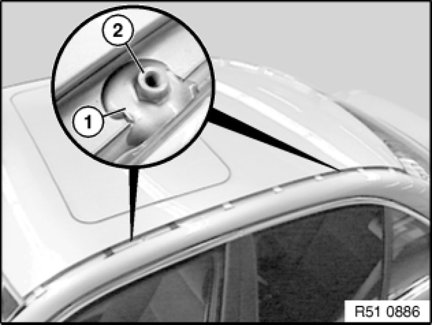
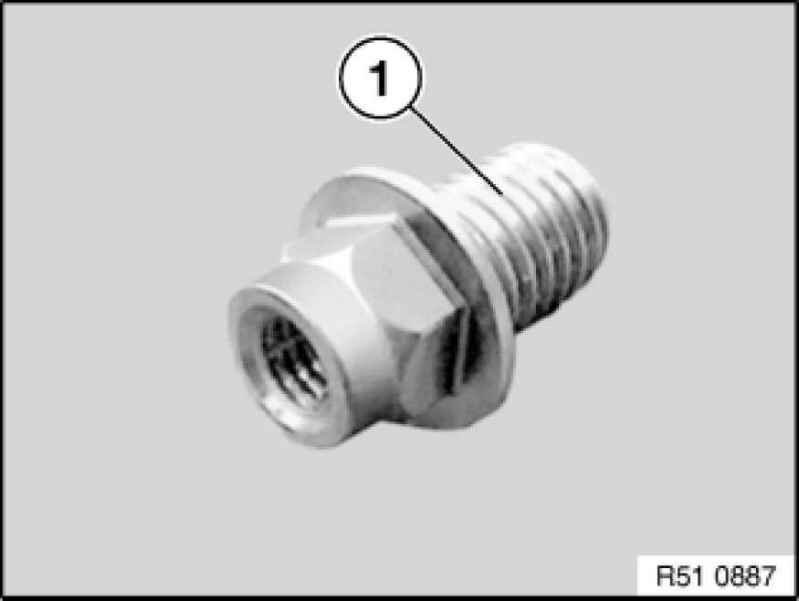

Luggage / Roof Rack Frame: Service and Repair
51 13 286 - Replacing bracket for roof luggage rack on left or right

Special tools required:

Necessary preliminary tasks:
- Remove trim strip from roof frame

Remove body sealing compound (1) with special tool 00 9 322 and unfasten threaded pin (2).

Note:
Threaded pin is designed as Torx from E87 model series.
Installation:
Threaded pin may not be wetted with screw securing adhesive on screw-in thread (1).
Before installing threaded pin, protect body against corrosion (e.g. apply zinc dust paint).
Tightening torque 51 13 1AZ Specifications.
Apply body sealing compound (1) (Terostat 9320, sourcing reference: BMW Parts Service) to threaded pin (2) all round.
After hardening time of body sealing compound (1) (refer to manufacturer's specifications), paint over body sealing compound (1) and threaded pin (2) with paint pencil of corresponding car colour.